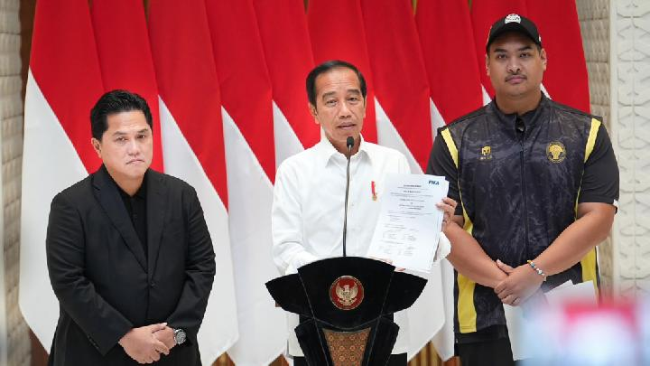

4 Desember 2023
Jakarta - Menteri Pemuda dan Olahraga Republik Indonesia (Menpora) Dito Ariotedjo menyatakan, selain mengajukan diri menjadi tuan rumah Piala Dunia U-20 2025 seperti diamanatkan Presiden Joko Widodo, Indonesia juga akan ikut bidding dan asistensi untuk empat agenda internasional lainnya. Keempat agenda tersebut adalah Kejuaraan Dunia Gimnastik di 2025, Kejuaraan Dunia Bola Voli 2025, Special Olympics World Games 2027, dan UFC World Championship 2024. Seri MotoGP pun juga akan berlanjut di Indonesia pada tahun mendatang.” Berkaca dari kesuksesan ini, Presiden kemudian mengharapkan Indonesia menjadi tuan rumah Piala Dunia U-20 dan U-17 edisi berikutnya. Indonesia akan menggandeng Singapura untuk dapat menjadi tuan rumah.
Baca Selengkapnya
Komentar